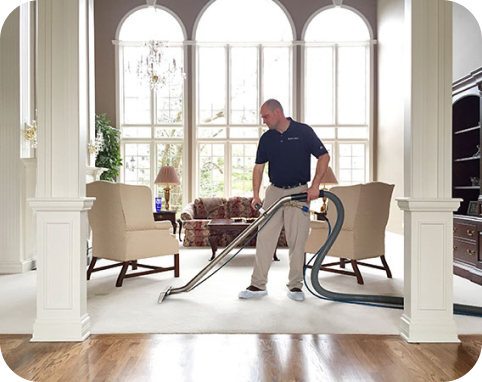

24/7 Serviços de danos em encamento,
danos por incêndio, eliminação de
bolor e riscos biológicos em Charlotte
Restauramento da Sua Casa e Sua Vida de Volta em um Estado Precário.

Existem muitos locais na sua casa em Aurora onde podem ocorrer danos causados pela água, desde O subsolo até ao sótão. Os danos causados podem ocorrer devido a canos e linhas de aspersão congeladas, canos enferrujados ou oxidados, transbordamento da sanita, fugas na sanita, aquecedor de água, frigorífico, transbordamento da máquina de lavar louça ou de lavar roupa, danos causados pela água no chão de madeira, danos causados pela água de canos partidos.
FALE CONOSCO
DISPONÍVEL 24 HORAS, 7 DIAS POR SEMANA